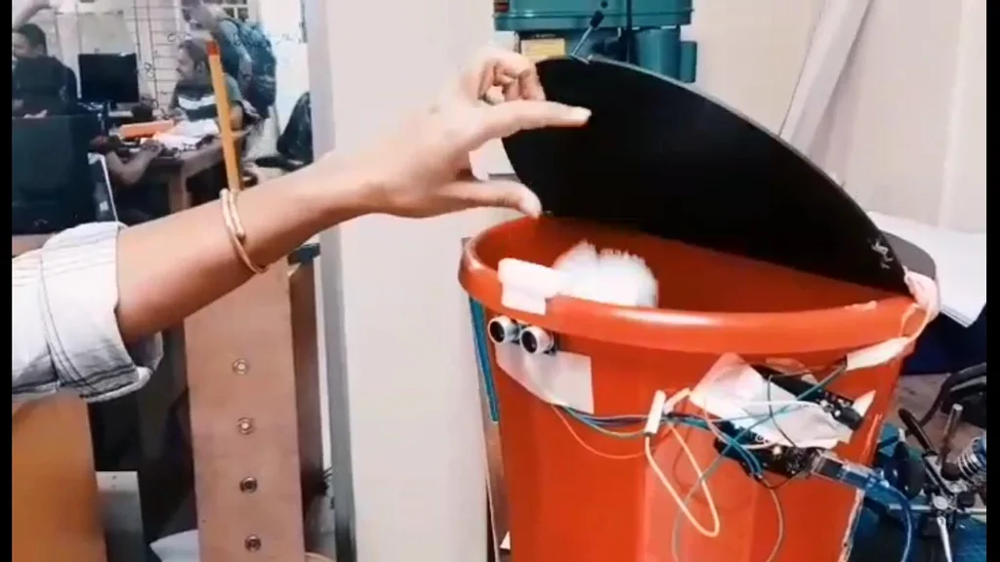
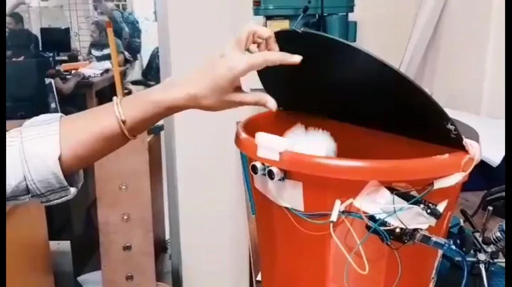

System Analysis
Vin, 3.3V, 5V, GND Vin: Input voltage to Arduino when using an external power source. 5V: Regulated power supply used to power microcontroller and other components on the board. 3.3V: 3.3V supply generated by on-board voltage regulator. Maximum current draw is 50mA. GND: ground pins. 2. Reset : Reset Resets the microcontroller. 3.Analog Pins A0 – A5 Used to provide analog input in the range of 0-5V 4.Input/Output Pins Digital Pins 0 - 13 Can be used as input or output pins. 5.Serial 0(Rx), 1(Tx) Used to receive and transmit TTL serial data. 6.External Interrupts : 2, 3 To trigger an interrupt. 7.PWM : 3, 5, 6, 9, 11 Provides 8-bit PWM output. 8.SPI: 10 (SS), 11 (MOSI), 12 (MISO) and 13 (SCK) Used for SPI communication. 9.inbuilt LED : 13 To turn on the inbuilt LED. 10.TWI : A4 (SDA), A5 (SCA) Used for TWI communication. 11.AREF : AREF To provide reference voltage for input voltage.
Connection
We made the lid by cutting to the size of this bucket using a CNC machine.Another Two important element is ultrasonic sensor to detect any kind of dirt and servo works for turn up the lid. Now, let me take you through the actual setup and build process of the Smart Dustbin using Arduino. First, I will start with the mechanism to open the lid. I have used a Servo Motor for this purpose.In order to open the lid, it must be placed near the hinge where the lid is connected to the main bucket From the following image, you can see that I have fixed the servo motor on the (bucket lid).Also, make sure that the lifting arm(strong thread) is parallel to ground under closed lid condition.
Once the servo is in position, you can move onto the Ultrasonic Sensor. Make two holes corresponding to the Ultrasonic Sensor on the lid of the dustbin, as shown in the following image.WARNING: You have to use a sharp object with a lot of force to make these holes. Be careful.Now, from the inside, place the Ultrasonic Sensor through the holes and fix its position with the help of glue.
Read more
 
